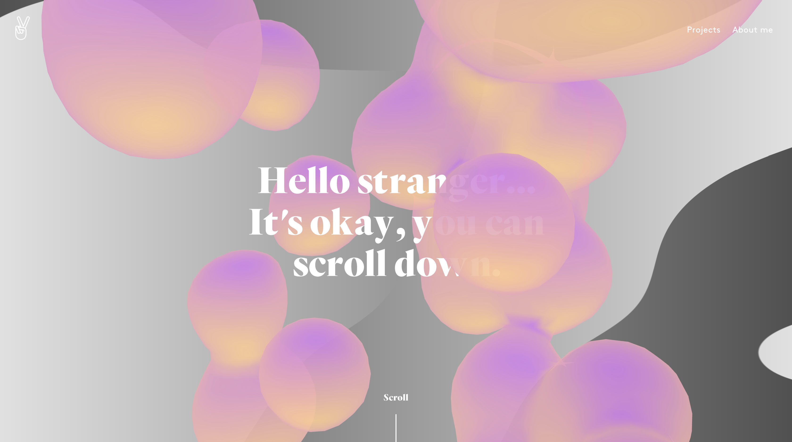
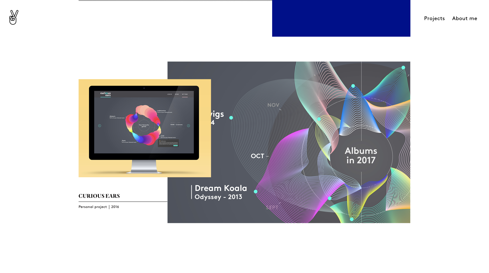
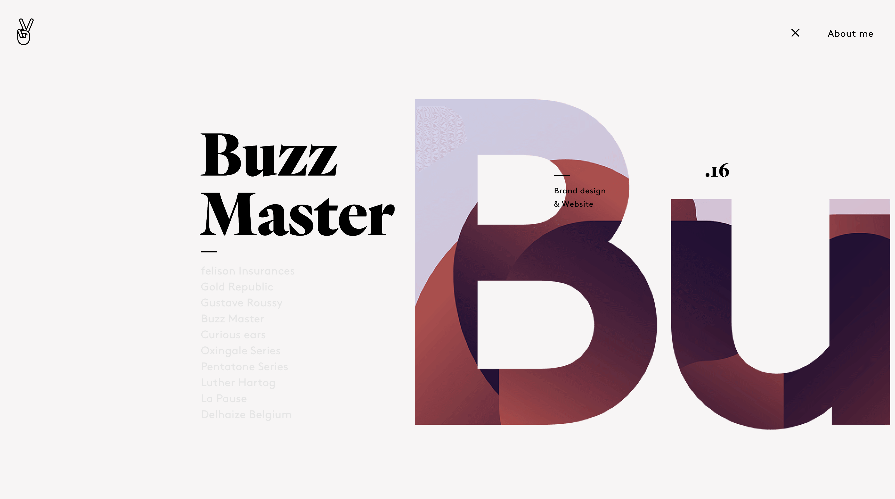
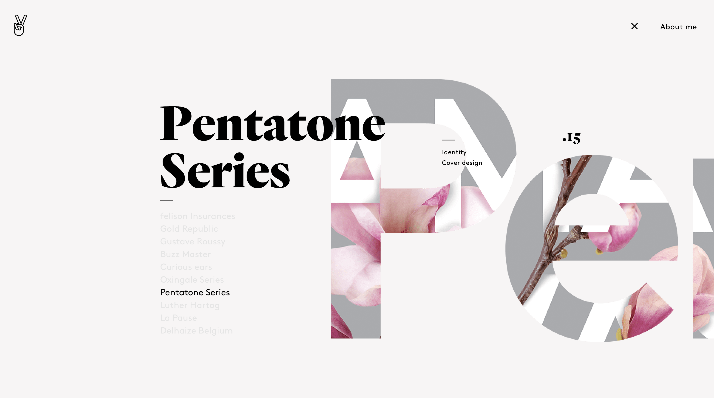
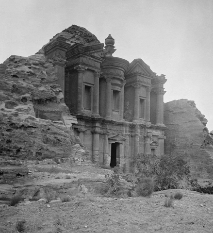
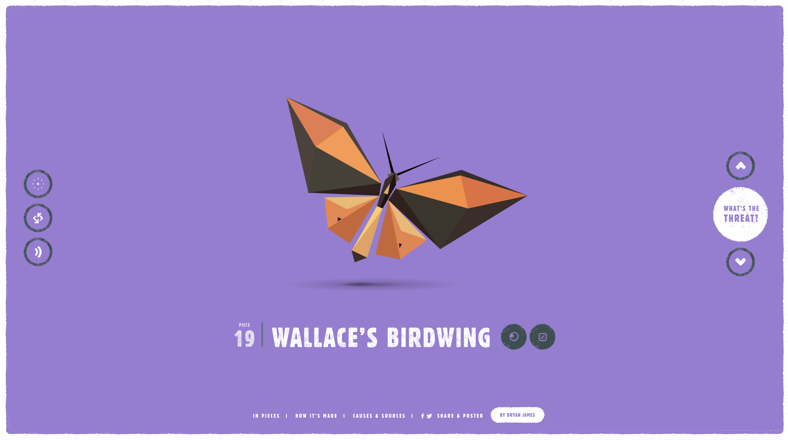
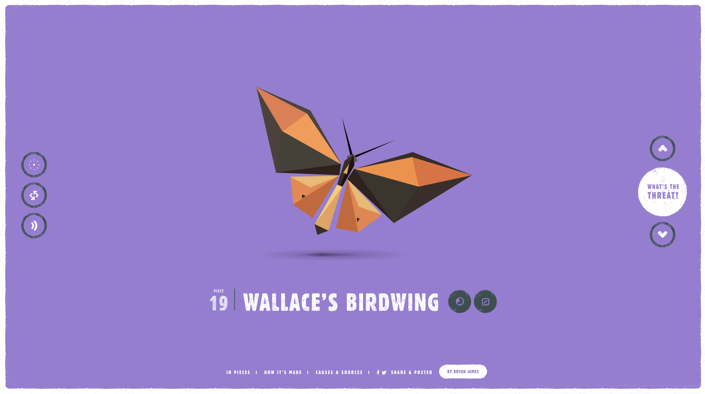

What I like the most about this website is the variety used when it comes to animation. The transitions between pages or sections are great.
   Travian was one of the games that I used to play when I was in high school. It's a browser-based online multiplayer strategy game. The main objective of the game was to build a village, choose a tribe, build an army, play against other players, and try to win to earn more resources to improve the village. What made the experience of playing the game fun for me was having some of my friends in the game. It was enjoyable to make progress in the game and see what my friends were doing to improve their villages.
Travian website


For project one, I'm planning to create a website that shows four structures from the wonders of the ancient world. Nature and history are two subjects that I find myself interested in learning about more and usually get inspired by when designing my projects; therefore, choosing the wonders of the ancient world as my topic felt that I would have a lot of options to choose from the structures and can come up with many ideas for the design of each page. For design inspiration, I've looked through many sites to get ideas but there's no specific site that I'm modeling mine after.
 

What I like the most about this interactive website is the simplistic yet engaging design.
I think the use of
geometric shapes for both the title and the species was a great idea
and made the design look more cohesive.
The interactive buttons on the left, bottom,
and right of the screen are a great addition for users to control
the elements and learn
more about the content that is being displayed. I also like the music! :)